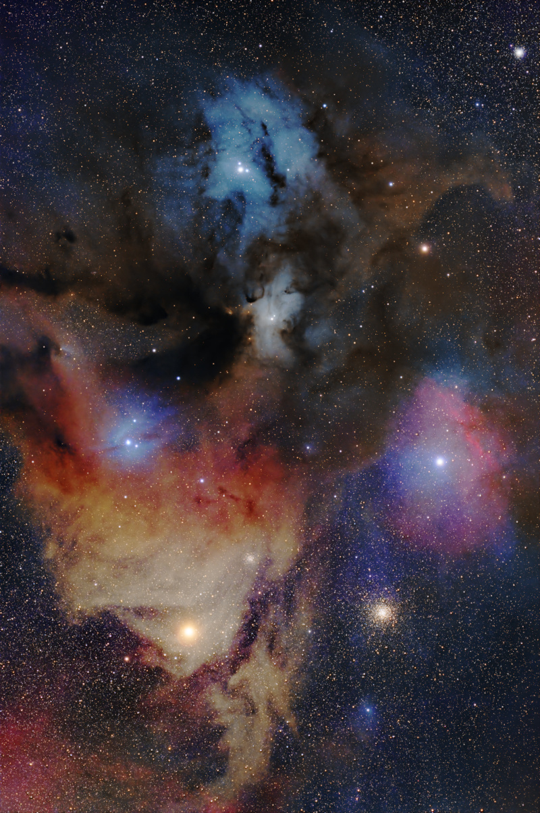

Rho Ophiuchi
Una región donde nacen estrellas. Me gusta que esta foto también hable de comienzos.
Un pedacito de nuestra historia
1 de julio de 2026
Y ese mismo día, el cielo guardó algo que ahora también siento nuestro.
Quiero enseñarte algo
01 / El cielo de aquel día
Astronomy Picture of the Day — NASA · 01.07.2026
02 / Una bonita coincidencia
Yaira, el 1 de julio de 2026 nos dimos nuestro primer beso. Y esa misma fecha, NASA eligió esta fotografía como su imagen astronómica del día.
Lo descubrí después y me quedé mirándola, pensé en lo bonito que era que algo así compartiera fecha con un recuerdo tan especial para mí.
No necesito que sea una señal.
Me basta con verla y pensar en ti.
03 / Si la miramos un poquito más
No hace falta entenderlo todo para quedarnos un rato mirando. Pero hay algunas cosas que quería contarte.
Una región donde nacen estrellas. Me gusta que esta foto también hable de comienzos.
Azules, rosas y dorados entre gas y polvo. Parecen pintados, pero están ahí, en el cielo.
Hay cientos de estrellas en sus primeras etapas. Tantas historias apenas empezando.
Algunas reflejan la luz de las estrellas; otras brillan por el gas que las rodea. De ahí nacen esos colores.
Una estrella supergigante roja que ilumina la zona amarilla. Ese rincón que parece guardar un poco de sol.
Un cúmulo de estrellas muy antiguo, abajo a la derecha. En la misma foto conviven lo que empieza y lo que perdura.
04 / Lo que significa para mí
Quizás alguien vea esta fotografía y solo piense que es hermosa. Yo también lo pienso, obviamente. Pero ahora, además de estrellas y nubes de colores, encuentro un recuerdo muy valioso.
1 de julio de 2026.
El día en que nos dimos nuestro primer beso y ambos aun recordamos cada vez que nos vemos.
No necesito que esta imagen tenga que contar nuestra historia. Me basta saber que, cada vez que la vea, voy a pensar en ti. Y eso ya la hace especial para mí.
Desde ese día, cada vez que vuelva a ver estas estrellas, voy a acordarme de ti y de ese momento que vivimos juntos.
Nuestro 1 de julio.